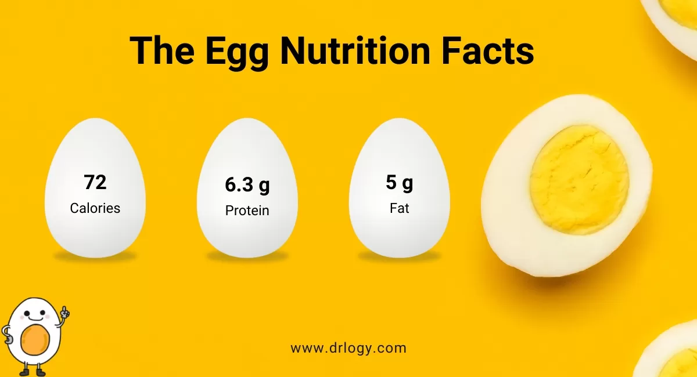

Eggs are typically 72 calories with around 6 grams of protein and 5 grams of fat[1].
They are a good source of protein due to its protein content. However, overconsumption of eggs
can lead to heart disease according to some studies due to its high cholestorol content[2].